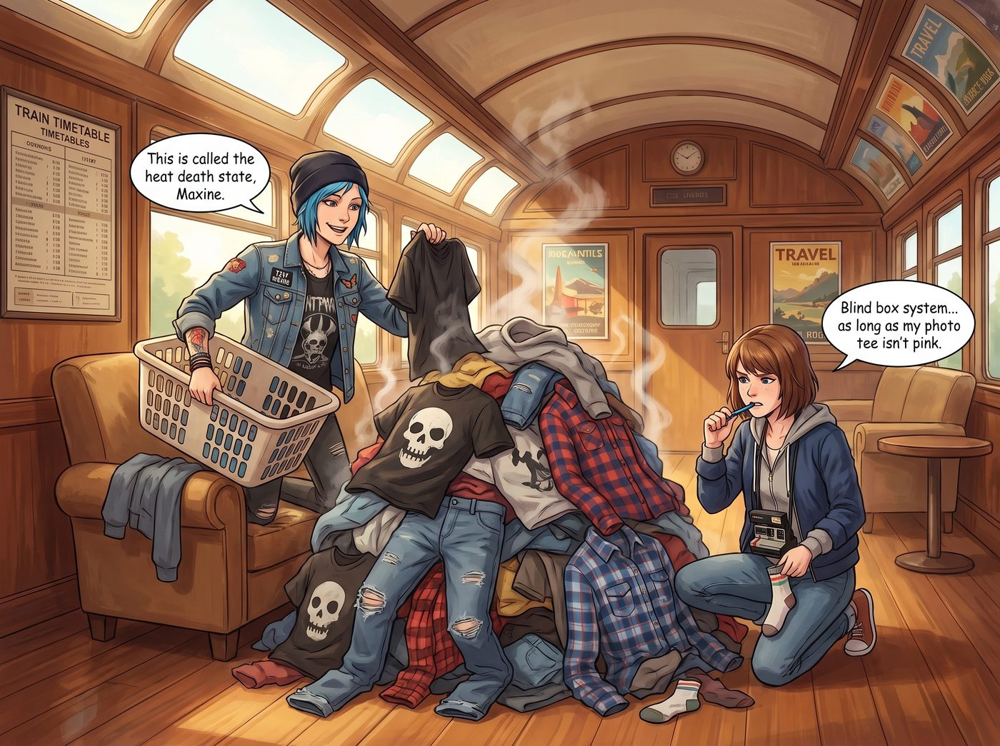

洗衣機災難

回顧《奇妙人生》原作，如果要探討 Chloe 和 Max 的衣服數量與收納習慣，那絕對是一場關於龐克廢墟與文青極簡的物理學考察。
在阿卡迪亞灣時期，Max 的衣櫃非常真實且精簡：幾件印著圖案的T恤、幾件連帽外套、牛仔褲和帆布鞋。身為一個住宿生，她的衣服基本都乖乖待在衣櫃或抽屜裡。
至於 Chloe？是的，Chloe 的房間裡確實有一個衣櫃。但對街頭霸王來說，衣櫃不是用來裝衣服的，而是用來作為房間地形的一部分，讓衣服可以掛在它的門把上、櫃頂上，或者乾脆散落在它周圍的地板上。Chloe 的房間完美詮釋了什麼叫薛丁格的衣櫃——衣服永遠處於穿過但還沒髒到不能穿與乾淨但找不到的疊加態。
那麼，當這兩個人搬進擁有核反應爐和頂級特工裝備的二號車廂後，面對烘乾機裡剛出爐的衣服，她們會乖乖拿熨斗燙平嗎？答案是：絕對不可能。
一、薛丁格衣服山
在二號車廂的公共休息區，有一張單人沙發。這張沙發沒人能坐，因為它已經被 Chloe 和 Max 共同構築的一座紡織品休眠火山給徹底佔領了。
當烘乾機發出滴滴滴的完成提示音時，Chloe 的常規操作是拿著一個巨大的塑膠洗衣籃，把裡面所有帶著熱氣的骷髏T恤、破洞牛仔褲、法蘭絨襯衫和 Max 的連帽外套一把抓出來，然後像倒水泥一樣，嘩啦一聲全部傾倒在那張單人沙發上。
沒有分類，沒有摺疊，更沒有熨燙。
「這叫熱寂狀態，Maxine。」Chloe 滿意地拍了拍那座衣服山，從裡面精準地扯出一件皺巴巴的黑色T恤套在身上，「衣服剛烘乾的時候是最純潔的。我們把它們堆在這裡，需要穿的時候直接從山頂往下挖。這不僅節省了摺疊的時間，還能保證每次穿衣都像在開盲盒一樣充滿驚喜。」
Max 咬著筆桿，看著那座衣服山，身為一個隨性的攝影師，她對這種粗暴的收納方式不僅沒有意見，甚至覺得非常合理。「只要我的灰底照片T恤沒有和妳那條掉色的紅頭巾混在一起染成粉紅色，我完全同意這個盲盒系統。」Max 說著，從半山腰抽出了一隻襪子，然後開始在山腳下尋找它的另一半。
二、階級與法規的雙重打擊
但這種碳基生物的原始洗衣生態，在二號車廂立刻引發了另外三個人的強烈生理與心理不適。
Victoria 穿著一襲平整得連一絲褶皺都沒有的真絲睡袍，手裡拿著一杯手沖咖啡，路過這座衣服山時，發出了極度嫌棄的冷笑。
「Price，妳們這是在沙發上培育某種新型的布料真菌嗎？」Victoria 捂住鼻子，彷彿那座乾淨的衣服山散發著毒氣，「這就是為什麼我堅持我的羊絨毛衣和法式襯衫必須由無人機送到西雅圖市區的頂級乾洗店。如果我的高定服裝和妳們那些印著骷髏頭的破布堆在一起，哪怕只是零點一秒，我的布料纖維都會因為感到屈辱而自燃。」
Victoria 的衣櫃是防塵、恆溫、帶有紫外線殺菌功能的獨立機櫃，每一件衣服都套著真空防塵袋，彷彿裡面裝的不是衣服，而是博物館的珍貴文物。
真正拯救了這張沙發的，是小天使 Kate。每當 Chloe 和 Max 跑去打電動或者出門偵察時，Kate 就會默默地繫上小圍裙，走到衣服山前。
「哎呀，衣服們這樣擠在一起，一定覺得很痛、很喘不過氣吧。」Kate 溫柔地喃喃自語。
她會像施展魔法一樣，將 Max 的連帽外套和 Chloe 的T恤一件件攤平，然後用近乎神聖手法，將它們摺疊成一個個完美的、可以直立的方形小豆腐塊。她甚至會順手幫 Chloe 那件滿是機油味的破皮夾克噴上一點薰衣草去味劑。
當 Chloe 回來時，看到原本狂野的衣服山變成了一排排整齊劃一的布料方陣，通常會陷入短暫的呆滯，然後痛苦地捂住臉：「Kate……妳把我的龐克靈魂疊成了軍訓夏令營的形狀……」
三、行政法規的天價罰單
當然，實習生 Lily 永遠不會錯過任何一個用行政法規恐嚇別人的機會。
有一天，當衣服山的高度達到了史無前例的半公尺時，Lily 抱著平板電腦幽靈般地出現了。
「Price 學姐，Caulfield 學姐。」Lily 推了推反光的圓框眼鏡，大眼睛盯著那堆衣服，「根據消防安全生命守則，室內可燃物的不規則堆放高度如果超過十八英吋，且未配備專用的火災感測器，將被定義為四級火災隱患。」
Max 拿著寶麗來相機的手僵住了：「Lily……這只是一堆剛洗乾淨的棉質T恤。」
「是的，Max 學姐。但從動產資產管理的角度來看，這是一堆未經盤點、未貼標籤、且隨時可能引發動線阻塞的無效囤積物。」Lily 溫柔地從口袋裡掏出一把紅色的塑膠束帶和一個二維碼標籤機：「如果妳們在下午三點前無法將這些紡織品歸檔到各自的物理儲存空間中，我將以車廂安全威脅為由，把它們作為無主廢棄物打包，合法捐贈給流浪漢庇護所，並以此為車廂申請五百美金的慈善免稅額度。」
「妳敢動我的骷髏T恤試試看！」Chloe 嚇得直接從電競椅上彈了起來，衝過去開始瘋狂地把衣服往自己懷裡塞。
「倒數計時開始。還剩四小時五十九分。」Lily 乖巧地按下了計時器。
最終的結果是：在二號車廂裡，Chloe 和 Max 依然懶得把衣服掛進衣櫃裡，但為了防止衣服被 Lily 當成可燃廢棄物強制捐贈，她們被迫學會了把衣服塞進有蓋子的收納箱裡——只要蓋子能蓋上，在實習生的合規雷達裡，它就是已封存的安全資產。而那些被 Kate 疊得整整齊齊的豆腐塊，則成了這兩個廢土文青在賽博監獄邊緣瘋狂試探時，最後的體面。